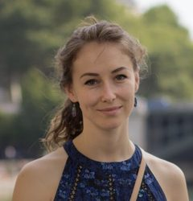

Publications (Google Scholar)
Affiliations
Department of Physics and Astronomy, Swinburne University of Technology
Arizona State University affiliate faculty in the Biodesign Center for Applied Structural Discovery, Arizona State University, Department of Physics, Center for Biological Physics, and collaborator with National Science Foundation BioXFEL Science and Technology Center in USA.
Nadia Zatsepin | ARC Future Fellow | Associate Professor
Department of Physics and Astronomy, Swinburne University of Technology
Google Scholar | Swinburne Experts
Nadia Zatsepin develops serial crystallography technologies for atomic-resolution structural biology at physiological temperature. Her work spans instrumentation, software development and experimental design for both X-ray free-electron lasers (XFELs) and synchrotro
She obtained a BSc(Hons) and PhD from Monash University, then joined Prof. John Spence's lab at Arizona State University in 2011 as a postdoctoral researcher. At ASU, working primarily at the Linac Coherent Light Source (SLAC National Accelerator Laboratory) - the world's first hard XFEL - she led serial crystallography data analysis and contributed to foundational SFX experiments. She progressed to Assistant Research Scientist (2013) and Research Assistant Professor (2015), heading XFEL data analysis for the NSF BioXFEL Science and Technology Center and building an independent research program funded by NSF (ABI Innovation: New Algorithms for Biological X-ray Free Electron Laser Data, 2016-2019, Award #1565180).
In 2019 she moved to La Trobe University as a Senior Research Fellow in the ARC Centre of Excellence in Advanced Molecular Imaging. She joined Swinburne University of Technology in 2024, where she holds an ARC Future Fellowship.
Her work has also been supported by the Australian Research Council COE in Advanced Molecular Imaging, ARC COE in Coherent X-ray Science, US NSF DMC Award #1817862, and various travel awards.
Affiliations
Affiliate faculty, Biodesign Center for Applied Structural Discovery, Arizona State University
NSF BioXFEL Science and Technology Center (Head of XFEL Data Analysis, 2013-2019)
When not obliterating protein crystals with femtosecond XFEL pulses, debugging, drawing or cooking up a storm with her theoretical physicist & photographer husband and cross-eyed cat (who has sadly crossed to a parallel fluffy dimension to pursue her 10th life) , Nadia sang jazz and folk in Who Knew with her colleagues Profs John Spence (whom we sadly lost in 2021) and Uwe Weierstall, e.g. here and at the BioXFEL Annual International Conferences from 2017 to 2019. BioXFEL Trio at Caesar’s Palace, Las Vegas, 2017. Who Knew performances in New Orleans in 2018 and the last one, in San Diego in 2019 @ the BioXFEL 6th Annual Conference, were supposed to be posted on youtube but life got in the way. In addition to developing technology to film molecules in action, she is raising two humans.
Here's to you, John.
I develop X-ray methods for watching molecules move. My group works at the intersection of physics, instrumentation, algorithms and structural biology, building serial and time-resolved crystallography into a routine tool for drug discovery and materials science, and keeping it open so researchers anywhere can use and extend it.
I helped develop serial femtosecond crystallography from its earliest days at the world's first hard X-ray free-electron laser, leading data analysis for many of the experiments that turned it from a gamble into a method now used worldwide. I am now establishing room-temperature and time-resolved serial crystallography in Australia, and pushing the technique toward nanoscale crystals and new classes of target, from antimicrobial-resistance enzymes to framework materials.
Much of what I know, and much of how I work, I owe to the late Professor John C. H. Spence FRS: my postdoc supervisor, mentor, collaborator and friend for a decade. John recruited me to ASU despite no familiarity with crystallography and I never looked back. John brought warmth, humour, generosity and a fearless scientific ambition to everything he did, and our collaboration was the most productive and fun of my career. I try to carry his outlook forward, in the science, in the belief that the most interesting problems are worth taking on even when they look impossible, to "never underestimate the value of enthusiasm" and "don't get lost in the noise". I miss your brilliance, silly jokes, plentiful book recommendations and irreverence. And our music.